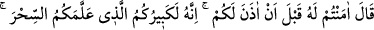
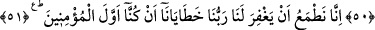
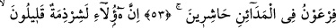
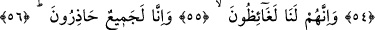
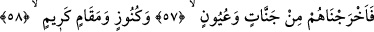
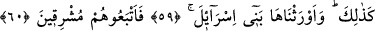
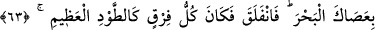
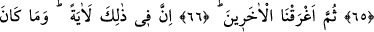
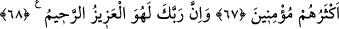

BEN SİZE İZİN VERMEDEN
ONA ÎMAN ETTİNİZ HA!
49. Fir’avn, (kızgınlık içinde) dedi ki: Ben size izin vermeden ona iman ettiniz
ha! Demek ki size sihiri öğreten büyüğünüzmüş o! Ama şimdi (size yapacağımı
görecek ve) bileceksiniz: Andolsun ellerinizi ve ayaklarınızı çaprazlama
kestireceğim, hepinizi astıracağım!
50. “Zararı yok, (nasıl olsa) biz şüphesiz Rabbimize döneceğiz.” dediler.
51. “Biz, ilk iman edenler olduğumuz için Rabbimizin hatalarımızı bağışlayacağını
umarız.”
52. Musa’ya: “Kullarımı geceleyin yola çıkar; çünkü takip edileceksiniz.” diye
vahyettik.
53. Fir’avn da şehirlere (asker) toplayıcılar gönderdi:
54. “Esasen bunlar, sayıları az, bölük pörçük bir cemaattır.”
55. “(Böyle iken) kesinkes bizi öfkelendirmişlerdir.”